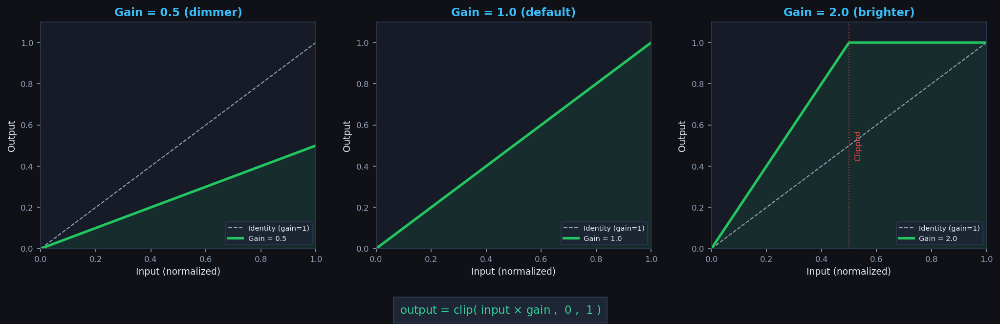
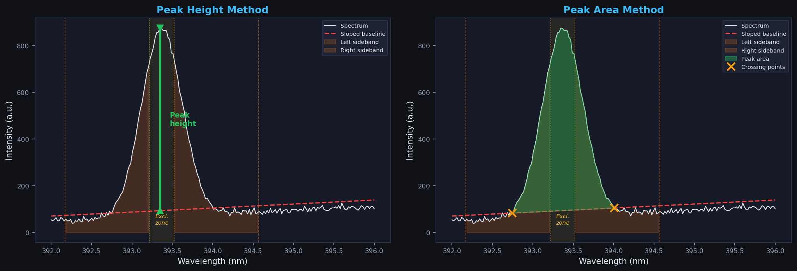
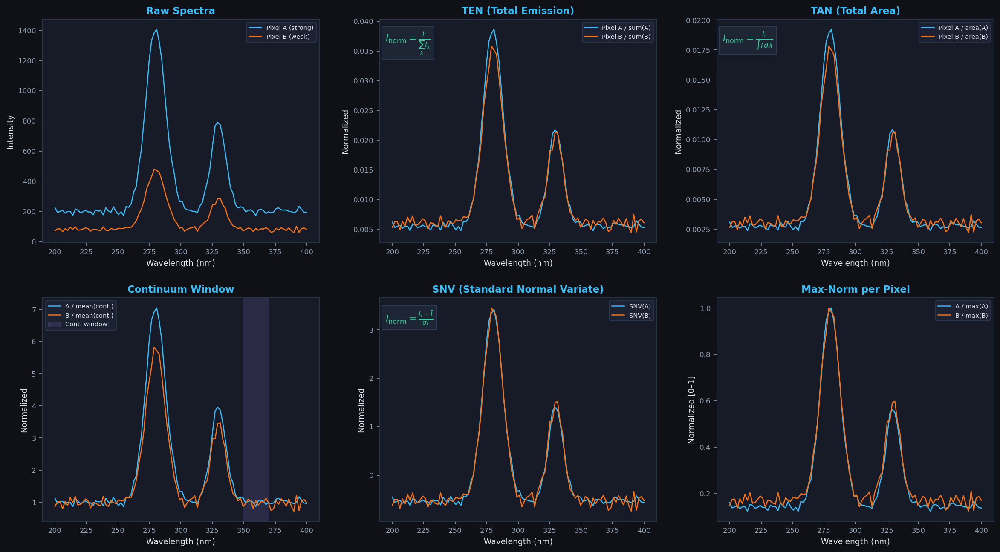

LIBS Hypercube Explorer
Build 2026-04-02
A desktop application for the interactive visualization, processing, and export
of LIBS (Laser-Induced Breakdown Spectroscopy) hypercubes stored as NetCDF
(.nc) files. Designed for speleothem and geoscience mapping workflows,
it provides band imaging, spectral data extraction, photo co-registration,
multi-element composite generation, normalization, interactive masking,
baseline inspection, and project management.
Workflow
The application follows a logical step-by-step tab order: 1. Info → 2. Photo → 3. Mask → 4. Normalize → 5. Map Explorer → 6. Data Extraction → 7. Composite → 8. Cube Subset.
System requirements
| Dependency | Purpose |
|---|---|
| Python 3.8+ | Runtime |
| PyQt5 | GUI framework |
| xarray | NetCDF cube loading and manipulation |
| numpy | Array computation |
| matplotlib | All interactive canvases and plots |
| pandas | CSV/XLSX export of line/spectrum data |
| scipy | Peak detection and spatial median filter |
| Pillow | Raw 1:1 image export |
| netCDF4 (optional) | Reading spectrometer device metadata |
Opening a cube
Go to File → Open LIBS cube… and select a NetCDF (.nc)
file. The file must contain a bands coordinate with wavelength values
(in nm) and one or more 2-D or 3-D data variables representing spectral intensity maps.
Menu bar
File
| Action | Description |
|---|---|
| Open LIBS cube… | Load a .nc hypercube file. |
| Export… | Open the unified export dialog (figures, images, plots). See Export. |
Project
| Action | Description |
|---|---|
| New Project | Start a blank project (no file association). |
| Open Project… | Load a .hcxproj file; a picker lets you choose which experiment to activate. |
| Save Project | Save to the current project path (first save falls through to Save As). |
| Save Project As… | Choose a new .hcxproj path. |
| Add Experiment (snapshot)… | Capture the entire current UI state as a named experiment. |
| Load Experiment… | Restore a previously saved experiment from a picker. |
| Update Current Experiment | Overwrite the active experiment with the current state without renaming. |
| Rename Experiment… | Rename any experiment in the project. |
| Delete Experiment… | Remove an experiment from the project. |
Help
| Action | Description |
|---|---|
| User Guide… | Open this document in the system web browser. |
| About… | Show the version, build date, and credits. |
Tab 1 — Info
Displays cube metadata and global attributes from the NetCDF file. Commonly used LIBS acquisition parameters are listed first (creation date, integration time, laser frequency, step size, mapping dimensions). Use File → Open LIBS cube… to load a cube.
Tab 2 — Photo
Load a reference photograph and co-register it with the LIBS cube using a 4-point homography. Once calibrated, lines and pixels drawn on the photo in the Data Extraction tab are automatically mapped to LIBS coordinates, and the LIBS footprint is projected onto the photo.
Controls
| Control | Description |
|---|---|
| Load photo… | Load a reference image (PNG, JPG, JPEG, TIF, TIFF, BMP). |
| Define scan polygon | Toggle polygon drawing mode. Each click adds a vertex. Press Enter to commit. |
| Clear polygon | Remove all polygon vertices and the overlay. |
| Start 4-point calibration | Enter calibration mode. The next 4 clicks define the scan area corners: Top-Left → Top-Right → Bottom-Right → Bottom-Left. |
| Clear calibration | Remove calibration points and the computed homography. |
| Drag calib points | When checked, calibration points can be dragged to refine the registration. The homography recomputes live. |
Tab 3 — Mask
Interactive spatial masking to flag background or unwanted pixels. The mask is a 2-D boolean array (True = masked). Masked pixels are set to zero in the working dataset when applied. The left panel shows a band preview with a red overlay on masked pixels; the right sidebar contains all masking tools.
Band Preview
| Control | Description |
|---|---|
| Band slider | Select which spectral band is displayed as the background image. The threshold masking operates on this band. |
Threshold Masking
| Control | Description |
|---|---|
| Threshold | Intensity threshold value. |
| Mask pixels | Direction: Below threshold or Above threshold. |
| Apply threshold | Mark pixels on the current band that meet the threshold condition. The result is OR-ed with the existing mask (additive). |
Paint Tools
| Control | Description |
|---|---|
| Rect | Click and drag a rectangle on the map to mask/unmask a rectangular region. |
| Brush | Paint directly on the map with a circular brush. Hold the mouse button to paint continuously. |
| Polygon | Click to place vertices; right-click or double-click to close the polygon and fill. |
| Brush size (px) | Radius of the circular brush (1–50 px). |
| Mode | Mask sets pixels to masked; Unmask clears the mask at painted locations. |
Actions
| Control | Description |
|---|---|
| Clear all | Reset the entire mask to unmasked. |
| Invert mask | Flip all mask values (masked ↔ unmasked). |
| Load mask | Load a previously saved mask (.npy boolean array). Shape must match the cube. |
| Save mask | Save the current mask as a .npy file. |
Apply to Cube
Tab 4 — Normalize
See the dedicated Normalization section for a full description of each method.
| Control | Description |
|---|---|
| Method | Select a normalization algorithm. Controls below are enabled only when relevant. |
| Cont. start / end (nm)Continuum only | Wavelength range defining the featureless continuum window. |
| Kernel (px)Spatial median only | Size of the 2-D median filter kernel (forced odd, 3–201 px). |
| Apply | Run the normalization. A progress dialog shows progress with a Cancel button. |
| Save cube… | Export the normalized + masked dataset as a new NetCDF file. |
Tab 5 — Map Explorer
The main band-map view. The left sidebar contains display and processing controls; the right side shows the intensity map and a log-scale histogram. Both panels update when you change controls.
Band Selection
| Control | Description |
|---|---|
| Element | Dropdown of ~200 common LIBS emission lines. Selecting one snaps the band slider to the nearest wavelength. |
| Ca/Mg specialist | Extended line list for carbonate/speleothem chemistry. |
| Periodic Table… | Full 118-element interactive table. Elements with registered LIBS lines are highlighted in blue. |
| Colormap | Choose the display colormap (Viridis, Inferno, Red, Green, Blue, Gray, etc.). |
| Band index slider | Manual band selection when no named element is active. |
Display
| Control | Description |
|---|---|
| Axis units | Switch between mm (default) and µm for spatial axis tick labels. |
| Pixel size (mm/px) | Physical pixel size used to scale the axes. |
| Show axes | Toggle spatial axis ticks and labels on the map. |
| Autoscale vmin/vmax | When checked, display range is computed from percentile spinboxes. |
| Low % / High % | Percentile bounds for autoscaling (default 0.5 / 99.5). |
| vmin / vmax | Manual intensity display bounds (when Autoscale is off). |
Processing
| Control | Description |
|---|---|
| Divide by band | Band-ratio mode: divide the map pixel-by-pixel by a denominator band. |
| Divider wl (nm) | Wavelength of the denominator band. |
| Local baseline subtraction | Subtract a local baseline from the displayed band. See Local Baseline. |
| Baseline method | Peak height or Peak area. See the dedicated section below. |
| Half-width (nm) | Half-width of the sideband windows (default 0.10 nm). |
| Excl. ± (nm) | Exclusion gap around the peak centre (default 0.02 nm). |
Low-signal warning
When a local baseline is applied with the Peak Height method and the maximum pixel intensity falls below 100, a red warning banner appears above the map: "Low signal — values may represent noise only." This helps identify wavelengths where no real emission line is present.
Tab 6 — Data Extraction
Interactive spectral data extraction. Draw lines or pick pixels directly on the LIBS map or on a co-registered reference photograph. The layout is a four-pane split: LIBS image (top-left), Photo (bottom-left), tool controls (top-right sidebar), and plot (bottom-right).
Drawing Tools
| Control | Description |
|---|---|
| Line mode | Click and drag on either image to draw a line. The intensity profile is plotted. |
| Pixel mode | Click on either image to select a single pixel. The full spectrum is plotted. |
| Ignore zeros | Treat zero-valued pixels as NaN in line profiles. |
| Parallel buffer | Average the line profile over ±N offset lines (0 = single line). |
| NaN tolerance | Maximum NaN offsets across the buffer before forcing NaN. |
Peak Detection
| Control | Description |
|---|---|
| Detect peaks | Overlay detected peaks on the pixel spectrum plot as red × markers. |
| Prominence | Minimum peak prominence threshold. |
| Min distance (pts) | Minimum spacing between detected peaks. |
Baseline Inspector
A dedicated sub-tab for visually inspecting what the local baseline settings do on a selected pixel spectrum. Available in the settings sidebar under "Baseline Inspector" and in the plot tabs.
| Control | Description |
|---|---|
| Load current spectrum | Copy the current pixel spectrum into the inspector. |
| Center λ (nm) | Centre wavelength of the peak to inspect. |
| Half-width (nm) | Sideband half-width (default 0.10 nm). |
| Excl. ± (nm) | Exclusion gap (default 0.02 nm). |
| View ± (nm) | How much spectral range to show around the peak. |
| Update | Recompute and redraw the baseline inspector plot. |
The inspector plot shows the raw data (dots), interpolated spectrum (line), sloped baseline, sideband windows (orange fill), exclusion zone labels, crossing points (× markers), peak area (green fill), and peak height (red vertical line). Numeric values for peak height, peak area, and their ratio are displayed below the controls.
Tab 7 — Composite
Overlay up to 5 elemental maps with user-defined colours, opacities, and gains to create a multi-element composite image. Each layer can independently apply local baseline correction.
Layer controls
Click the Periodic Table button to assign an emission line to the currently selected layer (indicated by the radio button). Each layer has:
| Control | Description |
|---|---|
| Radio button | Select which layer receives the next element assignment from the periodic table. |
| Enable checkbox | Toggle this layer on/off without clearing it. |
| Colour button | Click to pick a custom colour via the system colour dialog. |
| Opacity slider (Op) | Layer opacity from 0 % (invisible) to 100 % (fully opaque). |
| Gain (G) | Multiplicative brightness gain (0–20, default 1.0). See Gain explained below. |
| Auto checkbox | When checked, the layer's intensity range is set from the global percentile controls. |
| Min / Max | Manual intensity bounds for this layer (when Auto is off). |
| BL checkbox | Enable local baseline subtraction for this layer. |
| CB checkbox | Show a colorbar legend for this layer on the composite map. |
| ✕ button | Clear this layer (remove the assigned element). |
Global settings
| Control | Description |
|---|---|
| Auto low % / High % | Percentile bounds for auto-scaling layers (default 0.5 / 99.5). |
| Baseline method | Peak height or Peak area for baseline-corrected layers. |
| Baseline ±hw / excl | Baseline half-width and exclusion gap (same parameters as Map Explorer). |
| Background | Composite background colour: Black, White, or Gray. |
| Update composite | Regenerate the composite image. Changes to layer settings are not applied automatically — click this button when ready. |
View Position
| Control | Description |
|---|---|
| Record view position | Capture the current zoom/pan state. The recorded view is applied to all maps (Map Explorer, Data Extraction, Composite). |
| Clear | Remove the recorded view position and return to full-extent display. |
Map overlays
The composite map displays an element legend (coloured squares with element symbols) and a scale bar (mm or µm, adapting to the zoom level). Both overlays maintain their aspect ratio regardless of the map's aspect ratio and update dynamically when you zoom or pan with the Matplotlib toolbar.
Gain explained
The gain multiplier controls how bright a layer appears in the composite. After normalizing each pixel's intensity to the [0, 1] range (using vmin/vmax), the value is multiplied by the gain and clipped to [0, 1]. A gain of 1.0 is neutral; values above 1 brighten the layer (but may clip highlights); values below 1 dim it.

Tab 8 — Cube Subset
Spatially crop the loaded cube to a rectangular region and save the result as a new NetCDF file. The extracted subset carries provenance attributes recording the original filename, pixel ranges, and dimensions.
| Control | Description |
|---|---|
| X start / X end | Left and right column boundaries of the selection (inclusive pixel indices). |
| Y start / Y end | Top and bottom row boundaries (inclusive). |
| Extract & Save… | Slice and save as a new .nc file. |
| Clear selection | Reset all spinboxes and hide the selection rectangle. |
| Refresh map | Redraw the map using current band and display settings. |
Local Baseline & Methods
The local baseline subtraction estimates and removes the spectral continuum around an emission peak. It is available in the Map Explorer, Composite, and Baseline Inspector tabs.
How it works
Given a centre wavelength λc, a half-width hw, and an exclusion gap gap:
- Left sideband: channels in [λc − hw, λc − gap]
- Right sideband: channels in [λc + gap, λc + hw]
- Exclusion zone: channels in [λc − gap, λc + gap] — excluded from baseline estimation so the peak itself does not bias the fit.
- The sloped baseline is a linear interpolation between the median intensity of the left sideband and the median intensity of the right sideband. This accounts for the spectral continuum slope across the peak.
Peak Height vs. Peak Area
Two methods are available for quantifying the baseline-corrected peak:

| Method | Description |
|---|---|
| Peak height | Maximum intensity above the sloped baseline within the peak window. Fast and robust, but sensitive to spectral noise on a single channel. Best for well-resolved, strong emission lines. |
| Peak area | Trapezoidal integral of the spectrum above the sloped baseline, computed only within the contiguous positive region around the peak centre (between the left and right crossing points where the corrected spectrum crosses zero). Sub-channel interpolation is used at crossing boundaries for accuracy. More robust to noise than peak height, but slower to compute. Recommended for weak or partially overlapping lines. |
Cube-wide baseline correction
Located in the Normalize tab, this optional preprocessing step removes a slowly varying continuum from every pixel's spectrum before any normalization is applied. The corrected cube is cached separately from original_ds; if you then apply normalization, it operates on the baseline-corrected spectra. Clicking Reset discards the baseline and restores the loaded cube.
Pipeline order: original → baseline correction → normalization → masking. Each step is independent and can be cancelled via the modal progress dialog.
| Method | Description | Parameters | Notes |
|---|---|---|---|
| None | No baseline correction (default). | — | Equivalent to clicking Reset. |
| SNIP |
Sensitive Nonlinear Iterative Peak-clipping. For p = 1…N and each
band i, the spectrum y in LLS-transformed space is updated as
y[i] ← min(y[i], ½·(y[i−p] + y[i+p])).The lower envelope is then inverse-transformed to produce the baseline. The LLS transform log(log(√(x+1)+1)+1) compresses high-intensity
peaks so SNIP can converge without being biased by them.
|
Iterations (default 40) | Industry standard for LIBS, XRF and γ-ray spectroscopy. Preserves narrow peaks well. Too many iterations can erode broad features. |
| Rolling minimum |
Baseline = smoothed rolling minimum over a window of w bands,
computed via minimum_filter1d followed by uniform_filter1d.
|
Window (bands, odd) | Fast and memory-light. The window must be wider than the broadest peak but narrower than any real baseline curvature. If it is too small, peaks will be partially erased. |
| AsLS |
Asymmetric Least Squares (Eilers & Boelens, 2005). Each
spectrum y is fit to a smooth baseline z that
minimises
Σ wi(yi−zi)² + λ·Σ(Δ²zi)²,
with wi = p where yi > zi
and wi = 1−p otherwise. Weights are
updated each iteration, so the baseline "dives" below peaks while
following the continuum. Solved via a banded Cholesky system
(scipy.linalg.solveh_banded).
|
log10(λ), p, iterations | Very flexible: increase λ for smoother baselines; decrease p to push the baseline further below peaks (p = 0.001–0.05 typical). Slower than SNIP because one banded system is solved per pixel per iteration. |
baseline_method, parameters such as iterations, window, λ, p,
and baseline_source_file) so the processing history is preserved.
If you want to save baseline + normalization together, apply both, then use
Save cube… in the Normalization group instead.
Normalization
Normalization methods transform the working dataset to reduce acquisition artifacts and make spectra from different pixels more comparable. All methods operate on the full 3-D cube (bands × Y × X) derived from the original loaded data (or the baseline-corrected cube, if cube-wide baseline correction was applied) and show a modal progress dialog with a Cancel button. The original data is never overwritten in memory.

| Method | Description | Parameters | Key refs. |
|---|---|---|---|
| None | Restore the original unmodified dataset. | — | — |
| Total Emission (TEN) | Divide each pixel spectrum by its total emission (simple sum across all bands). Corrects for pixel-to-pixel variation in laser–sample coupling or ablation efficiency. Equivalent to TAN when spectral channels are equally spaced. | — | [1] [2] |
| Total Area (TAN) | Divide each pixel spectrum by its total spectral area computed via trapezoidal integration (∫ I dλ). Unlike TEN, this correctly accounts for non-uniform wavelength spacing between channels. Preferred when the spectrometer has variable channel widths. | — | [1] [2] |
| Continuum window | Divide each pixel spectrum by the mean intensity in a user-defined featureless spectral window. Corrects for matrix-dependent plasma continuum emission. The window should be free of emission lines. | Cont. start (nm) Cont. end (nm) |
[1] [2] |
| SNV (Standard Normal Variate) | Per-pixel: subtract the spectral mean, then divide by the spectral standard deviation. Each pixel spectrum is independently centred and scaled to unit variance. Originally developed for NIR diffuse-reflectance spectroscopy. | — | [4] [1] |
| Max-norm per pixel | Divide each pixel spectrum by its maximum value. Result is in the range [0, 1]. Simple but sensitive to a single dominant emission line. | — | [1] |
| Spatial median filter | For each band image independently, divide by a 2-D spatially median-filtered version. Corrects for spatially correlated background variations while preserving small-scale compositional contrasts. | Kernel (px) | [1] |
.nc file.
The original encoding (dtype, scale_factor, add_offset) is stripped so that full
float64 precision is preserved.
Masking (details)
The Mask tab (Tab 3) provides interactive spatial masking. In addition, a simple threshold mask can be applied from the Data Extraction tab sidebar:
| Control | Description |
|---|---|
| Enable mask | Toggle the mask on/off. Unchecking restores the unmasked (but still normalized) dataset. |
| Mask wl (nm) | Reference band wavelength. The nearest band in the original dataset is used. |
| Threshold | Pixels where the reference band intensity is below this value are masked. |
| Apply mask | Compute and apply the mask. If normalization is active, it is re-applied first. |
ROI Management
Regions of Interest (ROIs) let you store and reuse named line profiles and pixel spectra. Access them from the ROIs sub-tab in the Data Extraction sidebar.
Project-shared vs. per-experiment ROIs
The Use project-shared ROIs checkbox controls where ROIs are stored. When checked, ROIs belong to the project and are available to all experiments. When unchecked, ROIs are stored on the active experiment snapshot.
Line ROIs
| Button | Description |
|---|---|
| Add | Store the current drawn line with a user-supplied name. |
| Use | Restore the selected line on both LIBS and Photo panels. |
| Rename | Change the name of the selected ROI. |
| Remove | Delete the selected ROI from the list. |
Pixel ROIs
Same workflow as Line ROIs. Use restores the pixel marker and re-plots the full spectrum.
Export
Open File → Export… to access the unified export dialog.
Exportable items
| Item | Notes |
|---|---|
| Imaging image | The Map Explorer band map with colorbar. |
| Data extraction image (LIBS) | The LIBS panel from the Data Extraction tab. |
| Data extraction image (Photo) | The Photo panel from the Data Extraction tab. |
| Data extraction montage | Side-by-side figure: LIBS map above the photo. |
| Data extraction plot | The line profile or pixel spectrum plot. |
| Composite image | The multi-element composite with title, legend, and scale bar. |
| Composite raw (1:1) | 1:1 pixel image with no axes or title (uses PIL). |
| Raw pixel map (1:1) | 1:1 pixel image of the current band map with colormap applied. |
Export parameters
| Parameter | Description |
|---|---|
| Width / Height (cm) | Output figure dimensions (disabled for raw 1:1 exports). |
| DPI | Resolution (50–2400 dpi). |
| Title font size | Applied to all figure titles. |
| Axis font size | Applied to tick labels and axis labels. |
| Format | PNG, PDF, SVG, or TIFF. |
| Save to | Output file path. |
Projects & Experiments
Projects (.hcxproj files) store multiple experiment snapshots in a
single JSON file. Each experiment captures the complete UI state.
What is saved in an experiment
- Loaded cube path and photo path
- Selected element, band index, colormap, display bounds
- Normalization method and all parameter values
- Masking settings (wavelength, threshold, enabled state)
- All line and pixel ROIs (if per-experiment mode is active)
- Active tool mode, buffer and NaN tolerance settings
- Composite settings for all 5 layers (element, colour, min, max, gain, opacity, baseline, colorbar)
- Composite global settings (percentiles, baseline method/hw/gap, background)
- Baseline method preferences for Map Explorer
- Zoom/pan views for all canvas axes
- Photo homography matrices and calibration points
- Scan polygon vertices
Typical workflow
- Open a LIBS cube and configure the display.
- Project → New Project, then Add Experiment (snapshot)… to save the initial state.
- Modify settings (change normalization, draw ROIs, etc.).
- Add Experiment (snapshot)… again to save under a different name.
- Project → Save Project As… to persist to disk.
- Use Load Experiment… to jump between saved states.
References
| # | Citation |
|---|---|
| [1] | Guézenoc, J., Gallet-Budynek, A., & Bousquet, B. (2019). Critical review and advices on spectral-based normalization methods for LIBS quantitative analysis. Spectrochimica Acta Part B, 160, 105688. doi |
| [2] | Zorov, N.B., Gorbatenko, A.A., Labutin, T.A., & Popov, A.M. (2010). A review of normalization techniques in analytical atomic spectrometry with laser sampling. Spectrochimica Acta Part B, 65(8), 642–657. doi |
| [3] | Fabre, C. (2020). Advances in Laser-Induced Breakdown Spectroscopy analysis for geology: A critical review. Spectrochimica Acta Part B, 166, 105799. doi |
| [4] | Barnes, R.J., Dhanoa, M.S., & Lister, S.J. (1989). Standard normal variate transformation and de-trending of near-infrared diffuse reflectance spectra. Applied Spectroscopy, 43(5), 772–777. doi |